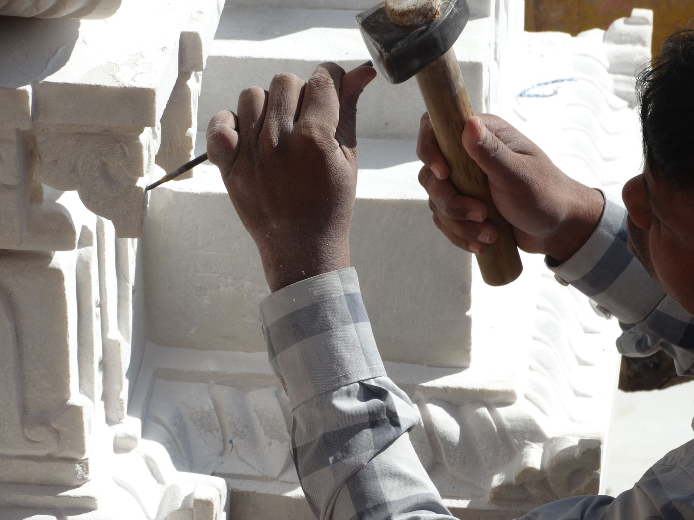
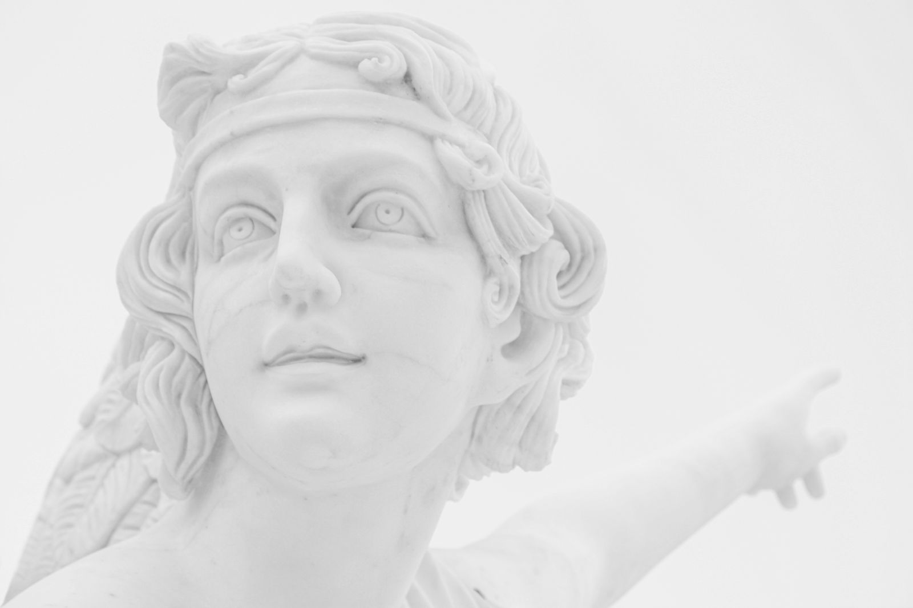

The sculptor
Thirty years of listening to stone.
I learned this trade standing on a crate in my father's workshop in Jaipur, holding a chisel I was not yet strong enough to swing all day. He taught me the ring test before he taught me the mallet: first learn to hear bad stone, he said, because no carving can save it.
Choosing the block
Four or five times a year I drive to Makrana and walk the yards. A block for a murti is not bought by the photograph or the rate card. It is bought by hand and ear:
- The ring test. The block is hung or balanced and struck. Sound marble rings clear and long. A dull answer means a hidden crack, a clay pocket or a soft vein — and that block stays in the yard.
- The wet look. Water thrown over the surface shows the true colour and the veining, the way polish will. Veins are mapped before money changes hands.
- Raking light. A lamp held low along the face line shows ripples and soft patches the noon sun hides.
- The face rule. If any flaw crosses where the eyes, nose or hands must fall, the block is rejected for that figure — however good the rest of it is. It may still serve for a base, a throne, or a smaller figure.
On a good trip I reject eleven blocks and buy one. The Pune Ganesh's block was the twelfth I struck that February morning.

The carving sequence
The same five stages, whatever the size.Roughing out is the violent month: the block loses half its weight to the point chisel and the pitching tool, and the figure emerges as a posture, nothing more. Shaping sets the proportions. Then the detail weeks — face, hands, ornaments, the folds of cloth — worked with rasps and small chisels, mostly in the morning when the light is honest. Polishing goes stone by stone, coarse to fine, wet; a mirror polish is simply this stage refused permission to stop early, which is why it costs a quarter more time. Finally the figure is crated: a timber box built around it, straw and foam packed by hand, the murti travelling on its back like a sleeping person, never standing loose in a truck.
Transport is part of the price of every commission and part of my worry until the message comes that it has arrived. In thirty years I have lost one figure on the road — a cracked ankle, 2009, a pothole outside Kota — and the crate design changed that winter and has not changed back.

Tala measure — how a figure is proportioned
A murti is not carved by eye alone. It follows iconometry: the figure is measured in talas, and one tala is the length of the deity's own face, from hairline to chin. A standing figure of the dashatala measure — the tall, majestic proportion used for temple Vishnu and Krishna figures — is ten faces high. A seated Ganesh sits lower and broader, and his measure counts differently, but the face is still the unit of everything: the trunk, the hands, the crown are all fixed in talas and their fractions before the chisel touches stone.
This is why a photograph of your old murti is enough for me to carve its replacement at the same presence, and why machine copies so often look subtly wrong: the router copies the surface, but the measure underneath it was never there.
What I do not do
Stated plainly, because it matters.I do not consecrate. The pran pratishtha — the rite that invites the deity into the murti — is performed by priests, at the temple, according to the temple's own tradition. It is not a finishing step I can sell you, and any sculptor who offers it as one is selling you something that was never his. My work ends at a well-made stone, honestly measured and honestly priced. What happens in the sanctum after delivery is the temple's sacred business, and I am glad it is not mine.
I do not sell machine work as hand work. If a figure in my workshop was roughed out by hand — and they all are — I say so. If you want a router-cut figure, the industrial estates will sell you one cheaper, and some of them are decent. But it will not have been carved, and you should not be charged as if it had been.
I do not promise festival miracles. If your date is inside the carving time, the planner on the home page will tell you so, and so will I. A smaller figure, a finished piece from the shelf, or an honest later date — those are the real options, and I would rather lose the order than the trust.
Looking after marble
Sent with every figure; printed here for anyone who needs it.- Dust with a dry, soft cloth. For washing, plain water and a drop of mild soap, rinsed and dried at once. Marble is stone, but it is a soft, thirsty stone.
- Keep acids away. Lemon, tamarind, vinegar and most bathroom cleaners etch marble permanently. Turmeric and kumkum stains should be lifted with a damp cloth the same day, not scrubbed later.
- Oil lamps: soot wipes off satin polish with a damp cloth; on mirror polish, use less water and more patience.
- Never lift a figure by its hands, trunk or crown. Lift from the base, two people for anything over 45 cm. More murtis are broken by kind hands in the wrong place than by any other cause.
Ask me about a figure.
Photographs of an old murti, a shrine's measurements, a festival date — bring what you have.